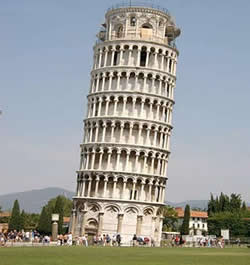

| 主 页 | 发展历程 | 古罗马 | 哥特式 | 巴洛克 | 古典复兴 |
漫步在欧陆城市中，展现在我们面前的是一个又一个美轮美奂的建筑，雄伟的凯旋门、高耸的埃菲尔铁塔、金碧辉煌的凡尔赛宫、气势辉煌的米兰大教堂......这些凝固的艺术，正向路人无声诉说着几千年来欧洲建筑文化的变迁。 每一扇门窗、每一段城墙、每一块砖瓦、每一条雕痕都记录着城市的历史，历史又丰富了建筑的内涵。欧洲建筑的发展史犹如博大精深的一部史诗，从古希腊到文艺复兴到后现代主义，无一不渗透着人类的智慧。欧洲建筑的发展史犹如博大精深的一部史诗，从古希腊到文艺复兴到后现代主义，无一不渗透着人类的智慧。 |
 |